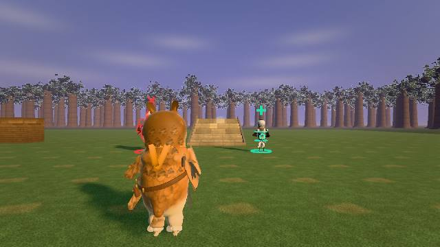
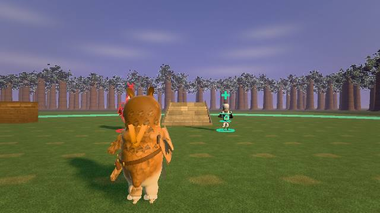
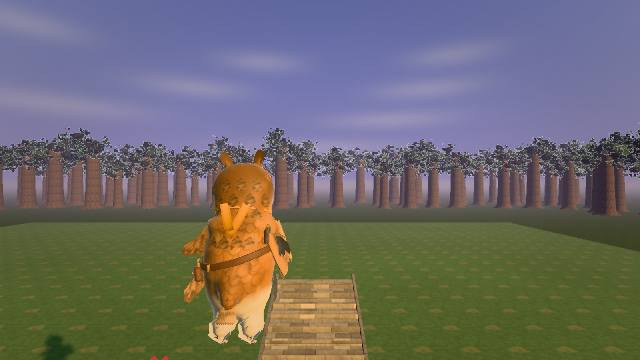

Owl Playable
Long-range poke · Playable since Stage 3
Appearance: round barrel body with no visible neck, a big flat facial disc and two upright ear tufts; huge orange eyes; a long rifle as tall as itself. Mottled tawny and cream. Reads as "round head with horns, long gun".
How to play
Long-range birds win before the fight starts. Chip health from far away, take the high ground, and fall back when an enemy closes the distance.
Owl fights with the Hush Rifle, which hits instantly. Damage drops off between 40 m and 90 m, and head hits are beak shots worth ×2. Every level above 1 is a Molt: +30 max HP per level; +3% gun damage of base per level; +1 Song power per level; +3 melee damage per level.
Your range is your safety. Use Night Eyes to find the enemy flock and Hush to stop an enemy ability before it lands. Aim carefully: the Owl's head shots are the strongest in the game.
Abilities
Four abilities. Slots 1 to 3 unlock at level 1, the ultimate at level 6. Each can be upgraded three times, for 1, 2, 5 AP, in order; see Ability Points. The shortest cooldown in the kit is Hush at 16 s.

1. Hush
Fire a silencing bolt (55 m/s, 45 m). It bursts on impact or at the end of its flight: 85 + 0.8×SP Song damage and a 1.5 s silence in 3 m.
- Tier 1 · 1 APBurst radius +1 m (4 m) radius +1
- Tier 2 · 2 APSilence +0.75 s (2.25 s) silence +0.75
- Tier 3 · 5 AP2 charges +1 charge

2. Night Eyes
For 6 s you see invisible enemies within 30 m, every enemy hero within 35 m is revealed to your flock, and your beak shots deal +20% damage.
- Tier 1 · 1 APTrue sight 40 m and reveal 45 m (+10 m to both) sight +10, reveal +10
- Tier 2 · 2 APLasts +3 s (9 s) duration +3
- Tier 3 · 5 APRevealed enemies take +10% damage (within 45 m) amp radius +45, amp +0.1

3. Silent Wing
Leap 6 m up, then glide for up to 4 s (falling 2 m/s, 9 m/s across, steer with WASD). The gun works while gliding. Landing or Space ends it.
- Tier 1 · 1 APGlide +2 s (6 s) glide +2
- Tier 2 · 2 AP-5 s cooldown cooldown -5 s
- Tier 3 · 5 AP+25% gun damage while gliding
4. Moonlit Mark
Root and channel for 1.2 s, then fire a 220 m/s shot (120 m) that passes fledglings and neutrals and stops at the first hero: 260 + 1.8×SP Song damage (a beak shot deals ×1.5), a 2.5 s silence and an 8 s reveal.
- Tier 1 · 1 AP+80 damage (340 + 1.8×SP) damage +80
- Tier 2 · 2 AP-20 s cooldown cooldown -20 s
- Tier 3 · 5 APThe shot also pierces heroes, hitting each for full damage range units -120, range all +120
Since Stage 3. See all heroes.